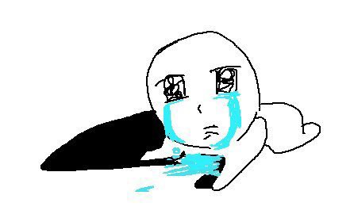
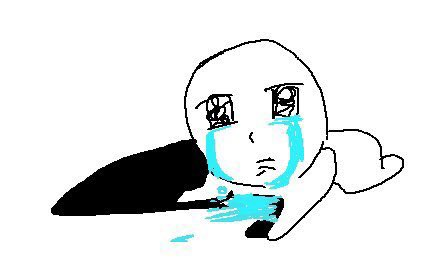

Phoebe Yeung @yaakoi.careerportfolio.social
Hello! My name is Phoebe Yeung, and I'm a student at Unionville High School. I...
- created this website based on Bluesky through HTML and CSS.
- love writing short stories and mini animations in my free time.
- have native fluency in English and can understand very basic Cantonese.
- will mostly likely not be using this website unless it is absolute polished! (ᵕ ´ᗜ`)
Phoebe Yeung @yaakoi.careerportfolio.social
New to my account? Here's my intro! (VERY EXTENSIVE)
[ Who are you? ]
I am Phoebe Yeung. I am currently attending Unionville High School for secondary education. I aspire to be a person that is respectful, hard-working, and organized. I want to be a good role model for others to follow, and it is one of my reasons why I try my best to improve myself in the ways I am able. One of my biggest goals is to inspire the way I am inspired by the creative works of others.
[ The importance of a good school-life / work-life balance ]
No one can perfectly juggle the two, but it is possible to strike some sort of area around the balance that works best for oneself. It is both important to take care of yourself in both lives, both to spend time with loved ones or indulge in hobbies and to reserve time for school assignments and homework made to exercise and express understanding of the material being learnt.
If the barrier is not set between academics and personal life, the two can blend together and conflict. Personal time may be sacrificed to make space for school work and vice versa, which can be beneficial if it is done right. Many students cram work for later when prioritizing activities and events that can be done at a later time, and many students can spend an excessive amount of time to focus on academics while neglecting personal matters and their own interests. This can be detrimental to mental health, performance in school, and proper time management. In my experience, balance is a fickle thing. However, with enough self-reflection and effort to change, it can be achieved.
[ What transferable skills are your strongest? ]
If I could list my strongest three, it would be communication and listening, problem solving, and adaptability mixed with creativity.
I think communication and listening is very important in all sorts of situations and all sorts of lives: my personal life, my school life, and my professional life. One example is communicating and listening to my educator. If I can not understand material, I can communicate it through emailing or talking in person with my educator when time allows. To be more time efficient, listening to given instructions carefully and taking them into consideration when working is useful.
Problem solving also blends into communication and listening. Sometimes I have to resolve an issue verbally or by action, and I find satisfaction in solving problems as it gives a sense of achievement. I find that problem solving is very frequently exercised in my daily life and hobbies, such as errors in wiring and execution when wiring a breadboard or encountering situations that require a more strategic approach.
Finally, adaptability and creativity is what I think makes me unique. I frequently incorporate my own interests and passions into my school work to not only enhance the quality of my work but to also make it enjoyable for myself and whoever I may present it to. I believe my creativity has led me to branch out and develop other skills and abilities like coding, stress management, time management, and grammatical skills.
Phoebe Yeung @yaakoi.careerportfolio.social
just need to polish the funky frames and maybe color... help...
 
